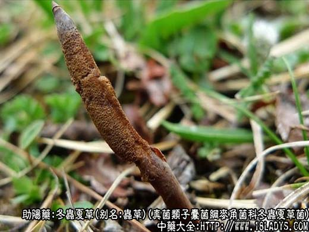
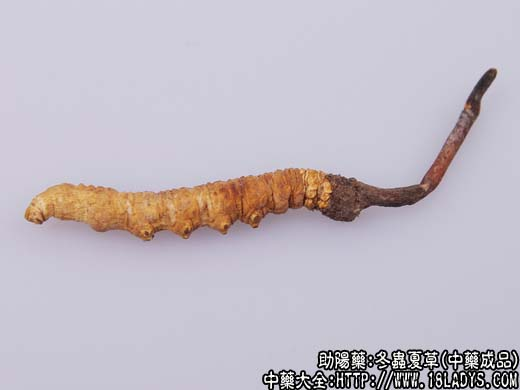
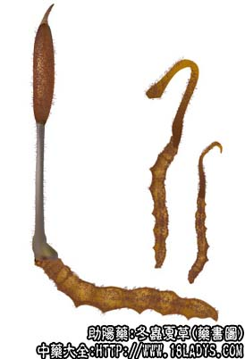

冬虫夏草为较常用中药。始载《本草纲目拾遗》。
别名：虫草、冬虫草。
来源：为真菌类子囊菌纲麦角菌科冬虫夏草菌，寄生虫在鳞翅目蝙蝠科昆虫绿蝙蝠蛾的幼虫体内萌发于头部的子座及其寄主的干燥复合体。均为野生。生长于海拔2000米～30000米以上的高山无树林的向阳草坡，喜生于疏松干燥、腐植质多的土壤中。
产地：主产于四川、云南、青海、西藏等地。此外甘肃、贵州亦产。
性状鉴别：冬虫夏草系虫体和菌座的复合体。虫体形似蚕，长3～5厘米，直径约5毫米。表面金黄色至黄棕色，粗糙，背部有多数横皱纹，腹面有足8对，位于虫体中部的4对较明显。折断面内心充实，白色或略发黄，周边深黄色。子座呈棒状，略弯曲，基部略粗，中部稍细，上部略膨大。表面灰褐色或黑褐色，长可达6厘米，直径约3毫米。体虚泡，剥裂时内含白色丝状物。气微香，味淡。以虫体肥壮，条长，外色金黄，内色白，子座完整者为佳。
主要成分：含虫草酸，为奎尼酸异构物；又含冬虫夏草素。
功效与作用：益肺肾，止喘嗽，其作用为：
1、扩长支气管。其浸剂能显著扩张动物离体的支气管。
2、镇静。对小白鼠有镇静和催眠作用。
3、抗菌。体外试验，冬虫夏草素对链球菌、葡萄球菌、炭疽杆菌有抑制作用冬虫夏草酒精浸剂在1：100000浓度下，仍有抑制结核杆菌的作用。冬虫夏草治肺结核有效是否与此有关，值得进一步研究。
此外，对实验动物的肠管、子宫的平滑肌有抑制作用。
炮制：原品药用。
性味：甘，温。
归经：入肺、肾经。
功能：益肺肾，补精髓，止血化痰。
主治：虚劳咳嗽，吐血，阳痿，腰膝酸痛，遗精等症。多用于虚弱证，肺结核咳血，老年人虚弱性慢性咳喘，病后盗汗，自汗或贫血等症。
临床应用：主要用于病后调补身体。
1、用于病后体弱、头晕、食欲减退、自汗、贫血，尤其呼吸道抵抗力低，易受风寒感冒者，可用冬虫夏草作为补品服食，加强抵抗力。常配鸭或猪肉或鸡肉纯服，也可以用来炖生鱼、水鱼。临床观察似有加强配伍的补品的作用，促进其吸收作用。
2、用于阳痿、腰酸腿软、遗精等，常配杜仲、淫羊藿、肉苁蓉等，水煎服，也可用炖狗肾、炖鲍鱼食服。
3、用于肺结核之阴虚喘嗽、咳血、胸痛，常配杏仁、川贝、麦冬、阿胶等，方如冬虫草汤；也可配侧柏叶、人参叶、玄参等水煎服。
此外，慢性肾炎患者常服冬虫草，对加强体质也有好处。
使用注意：1、冬虫夏草为平补药品，取效较缓，须长期服食才有效果；
2、肺热咯血患者不宜用。
用量：9～15g，与其他药煎服，或与其他营养品炖服。冬虫夏草可入丸散。
处方举例：冬虫草汤：冬虫草12g，杏仁9g，川贝9g，阿胶珠5g（溶化），白芨9g，百部12g，水煎服。咳喘重者加蛤蚧末3g（冲服），咳血重者加三七末3g（冲服）。
注：1、吉林土门岭产一种“蛹草”，寄主为夜蛾科昆虫的幼虫，常在发育成蛹后，才生出子座，故名蛹草。
2、江西产一种冬虫夏草的类似品，名为“草木王”幼虫体形似蜈蚣。表面灰褐色，常一节深黑一节紫红相间，有大毒。用于解蛇毒（见江西《中草药学》1398页）。
3、冬虫夏草的生成，是绿蝙蝠蛾的幼虫感染了麦角菌科虫草属植物的寄生菌后，菌潜伏在体内，冬季幼虫蛰居土中，使虫体内的蛋白质逐渐凝固僵化而死。至夏季高山积雪溶化，温湿度适宜于菌体生长时，即萌发出子座，伸出土外，基部仍留在土甲与幼虫的头部相连，即冬虫夏草。